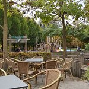
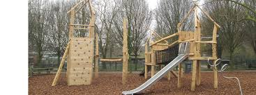
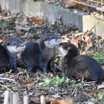
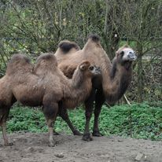
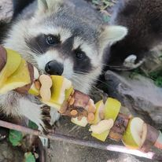

| Enkele sfeerimpressies | ||
|---|---|---|
|  |  |  |
| Een mooi terras | Een kindervriendelijke speeltuin | Een angstaanjagend spookkasteel |
| Met de bijbehorende geluiden | ||
| Maar het is vooral een dierentuin voor de kinderen met onder andere | ||
|---|---|---|
|  |  |  |
| Otters | Kamelen | Wasberen |
| Met de bijbehorende geluiden | ||